AI
- LangGraph을 통해서 AI-Agent 서비스를 개발할 수 있습니다.
- AI-API-Token을 RAG 기법을 활용하여 AI 챗봇을 만들 수 있습니다.
- 하이브리드 RAG · 온톨로지 기반 AI 서버를 구축할 수 있습니다.
WEB BACKEND DEVELOPER
끊임없이 탐구하며, 성장하는 개발자
도전과 학습을 통해 정보를 파악하고 항상 소통하며 부족한 점을 배우고 정보를 공유하며 성장하는 개발자입니다. Java·Spring을 주력으로 AI, Infra 영역까지 넓혀가며 7개의 팀 프로젝트를 진행했습니다.
Introduction
도전과 학습을 통해 정보를 파악하고 항상 소통하며, 부족한 점을 배우고 정보를 공유하며 성장하는 개발자입니다.
삼성 청년 SW·AI 아카데미(SSAFY) 13기와 조선대학교 컴퓨터공학과에서 Backend를 중심으로 AI, Infra 영역을 넘나들며 팀 프로젝트를 진행했고, 이후 제조 기업용 AI 업무 워크스페이스에서 멀티테넌트 백엔드와 하이브리드 RAG · 온톨로지 기반 AI 서버를 개발했습니다. Kafka·SSE를 활용한 비동기 아키텍처 설계, LangGraph 기반 AI 에이전트 개발, Jenkins·Docker 기반 CI/CD 구축까지 — 문제를 발견하면 원인을 끝까지 추적해 개선폭을 수치로 남기는 것을 좋아합니다.
Java·Spring Boot 기반 API 설계, JPA 성능 튜닝, Kafka·SSE 비동기 파이프라인, 스키마 분리형 멀티테넌시 구축
LangGraph 상태 머신 설계, 하이브리드 RAG, 온톨로지 기반 업무 데이터 조회, TPO 추천 로직 개발
Jenkins 파라미터 빌드, Docker Compose, Nginx, AWS EC2·S3 배포 환경 구축
Git-flow, 코드 리뷰, JIRA 스프린트 기반 애자일 협업
Skill
체크박스는 각 영역에 대한 스스로의 활용 숙련도(4단계 기준)를 나타냅니다.
Background
Education
Awards
Certificates
Project Summary
제조 기업용 AI 워크스페이스부터 커플 다이어리 앱, AI 옷 추천, 코드 리뷰 자동화 플랫폼까지 — SSAFY와 학교, 해커톤 등에서 진행한 팀 프로젝트입니다. 타임라인의 각 항목을 누르면 상세 내용으로 이동합니다.
제조 기업을 위한 AI 업무 워크스페이스
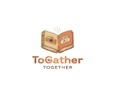
AI 기반의 커플 다이어리 및 일정 앱
시간·장소·상황에 따른 개인 맞춤 옷 추천 서비스
초보 개발자들을 위한 간편 코드 리뷰 플랫폼
관광지 추천 및 여행 일정 추천 플랫폼
전통시장 공동구매 플랫폼
조선대학교 교내 종합정보 앱
제조 기업을 위한 AI 업무 워크스페이스 (멀티테넌트 B2B SaaS)
Spring BootPostgreSQL하이브리드 RAG온톨로지개발환경
시스템 아키텍처
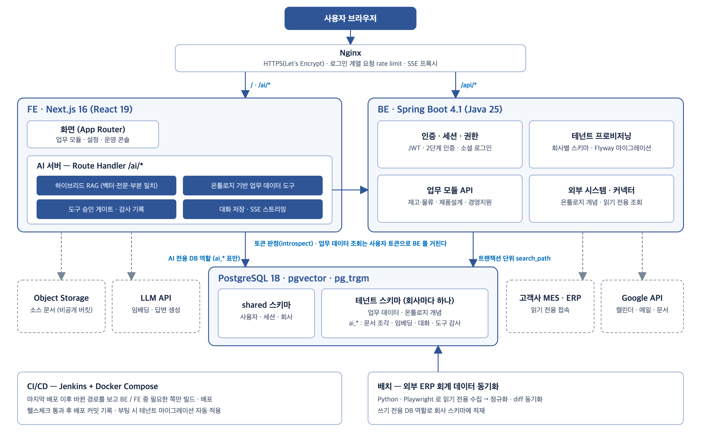
담당 업무
! 회사 문서를 근거로만 답하는 AI 서버를 색인부터 스트리밍까지 직접 설계 · 구현
! 데이터를 개념(동의어 · 속성 · 관계)으로 기술해 AI가 사내 DB와 고객사 MES · ERP를 조회
! AI가 외부 서비스에 쓰기 작업을 할 때는 반드시 사람의 승인을 거치도록 설계
! 회사 하나에 PostgreSQL 스키마 하나를 붙이는 스키마 분리형 멀티테넌시 구현
! Spring Security 기반 JWT 인증과 부서 · 직급 · 탭 단위 권한 모델 구현
! Jenkins + Docker Compose 기반 배포 파이프라인과 HTTPS 운영 환경 구축
Troubleshooting
? 관련 문서가 없는데도 AI가 답을 만들어 냈습니다 — 상위 8개 조각을 무조건 문맥에 넣어 무관한 조각이 항상 들어갔고, 「근거가 없으면 모른다고 답하라」는 분기가 실행되지 않았습니다.
실제 문서로 유사도 분포를 재서 근거 문턱을 정하고 적용
? 품번 · 전표번호처럼 글자가 정확히 맞아야 하는 질문에서 문서를 찾지 못했습니다 — 벡터 결과가 한 건이라도 있으면 전문 검색을 건너뛰었고, 조사가 붙은 낱말은 다른 토큰이 되어 AND 검색에서 탈락했습니다.
벡터 · 전문 검색 · 부분 일치를 합산하는 하이브리드 검색으로 재설계
? 「8월 손익 요약해 줘」 같은 질문에 AI가 답을 내지 못하고 종료됐습니다 — 모델이 전표 행을 직접 더하려다 도구를 20번 호출했고, 턴당 도구 단계 한도(6)에 걸렸습니다.
합계를 모델이 아니라 DB가 계산하도록 구조 변경
? 1차 부하 테스트에서 2 vCPU 서버가 동시 사용자 약 130명에서 붕괴했습니다 — 로그인이 DB 커넥션을 잡은 채 bcrypt(약 55ms)를 실행해 풀이 고갈됐고, 폭주 시 bcrypt가 CPU를 독점했습니다.
비밀번호 대조를 트랜잭션 밖으로 분리하고 동시 실행 수를 제한
? 같은 승인이 동시에 들어오면 도구가 두 번 실행될 수 있었습니다 — 승인 상태를 SELECT로 확인한 뒤 UPDATE하는 구조라, 두 요청이 모두 「대기 중」을 읽고 각각 실행할 수 있었습니다.
조회와 변경을 한 문장으로 합쳐 승인을 선점
? 정상 사용자가 갑자기 모든 기기에서 로그아웃됐습니다 — 회전된 refresh 토큰이 다시 오면 무조건 탈취로 보고 전체 세션을 폐기해, 두 탭이 동시에 재발급을 요청해도 로그아웃됐습니다.
회전 직후 30초 유예 창을 두어 정상 경합과 탈취를 구분
커플들을 위한 일상 다이어리 기록 앱
Spring BootKafkaReact NativeRAG 챗봇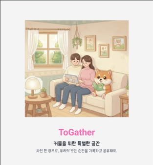
개발환경
Preview
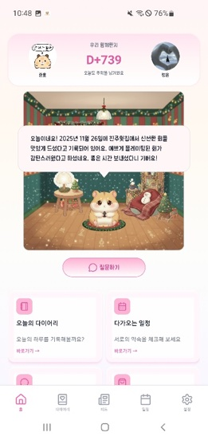
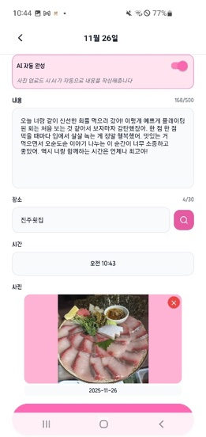
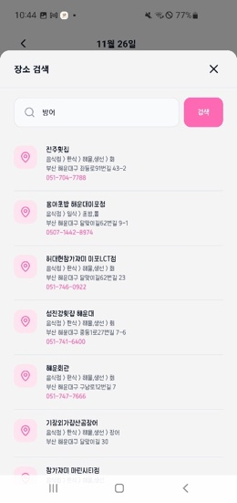
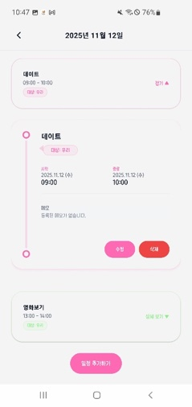
시스템 아키텍처
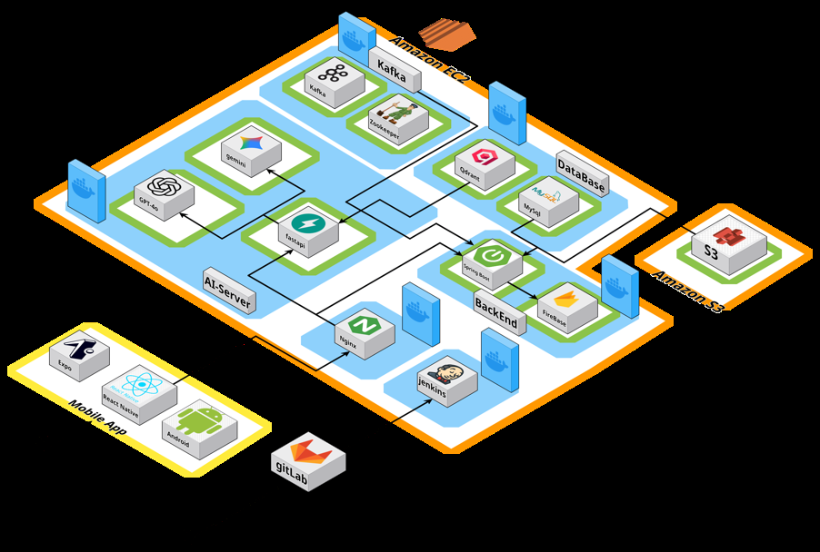
담당 업무
! Jenkins 파이프라인을 통해 CI/CD 파이프라인 구축
! 대용량 트래픽 처리를 위해 메시지 큐(Kafka) 클러스터 구축 및 비동기 파이프라인을 적용
! SpringBoot를 활용한 Post, Section 계층 구조 기반 다이어리 시스템 개발
Troubleshooting
? 기존 동기 방식의 이미지 분석 로직에서 100장의 이미지를 처리하는 데 20분이 소요되고, 다수 사용자 접속 시 병목 현상이 발생하는 문제를 확인했습니다.
Kafka와 Zookeeper를 활용해 분산 처리 시스템 구축
? Dev 수정 후 머지할 때 서버가 멈추는 문제 발생 — 빌드시 모든 도커 container가 재시작되는 파이프라인으로 인해 FrontEnd·BackEnd 연동 작업이 불편했습니다.
개발 파트별로 따로 빌드를 진행할 수 있는 파라미터 빌드 파이프라인을 구축하여 해결
? 부하 테스트 중 데이터가 많아질수록 post·section 조회 속도가 느려지는 것을 발견했습니다.
Post 테이블의 복합 인덱스(post_id, post_date, couple_id)를 적용해 속도 향상
시간·장소·상황에 따른 옷 추천 도우미 앱
LangGraphFastAPISpring BootBig Data개발환경
Preview

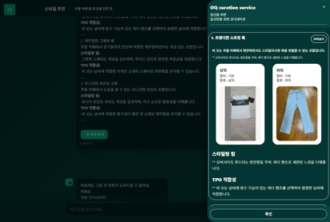
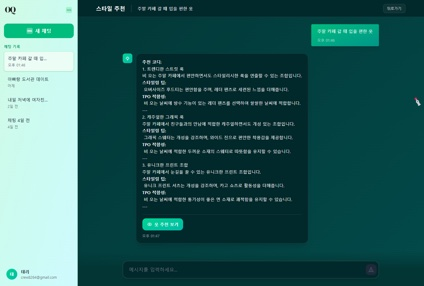
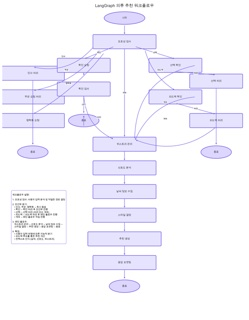
담당 업무
! 멀티턴 대화의 문맥 유지와 외부 데이터 연동을 통해 고도화된 상황 맞춤형 추천 서비스 구현
! 기구축된 Kafka를 활용한 비동기 통신 구조 설계 및 실시간 스트리밍 도입으로 응답 속도 개선
Troubleshooting
? AI-Agent를 개발할 당시 알맞은 에이전트 아키텍처 선정에 있어서 고민이 있었습니다.
복잡한 로직 설계와 실시간 처리를 결합한 LangGraph를 선정
? AI-Agent와 대화 시 질문 해석과 답변 응답이 정확하지 않음을 발견했습니다.
텍스트 파싱 방식에서 JSON 매핑 방식 및 실시간 날씨 API를 통해 자동으로 시간 정보 입력
? AI-Agent 응답 속도가 느리고 처리 단계를 알 수 없는 문제를 발견했습니다.
동기 방식에서 실시간 스트리밍(SSE) 방식 및 AI 모델 교체로 체감 속도 개선
AI 기반 협업형 코드 리뷰 및 충돌 해결 플랫폼
GitHub WebhookSpring BootAI ReviewInfra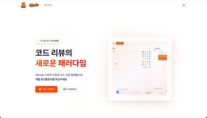
개발환경
Preview
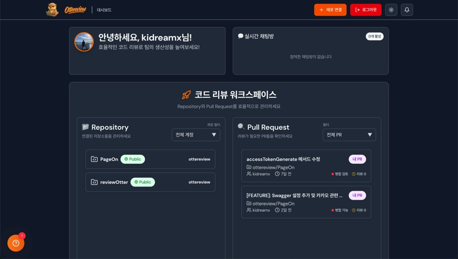
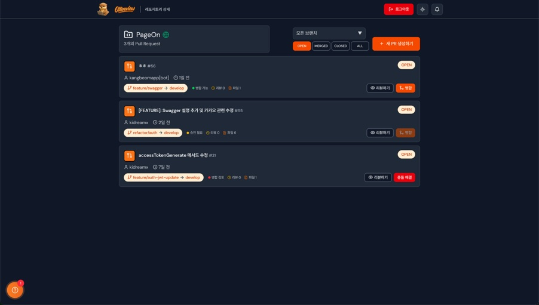
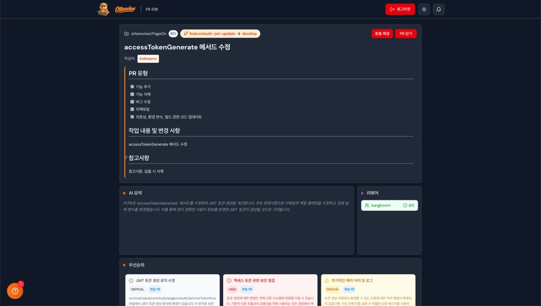
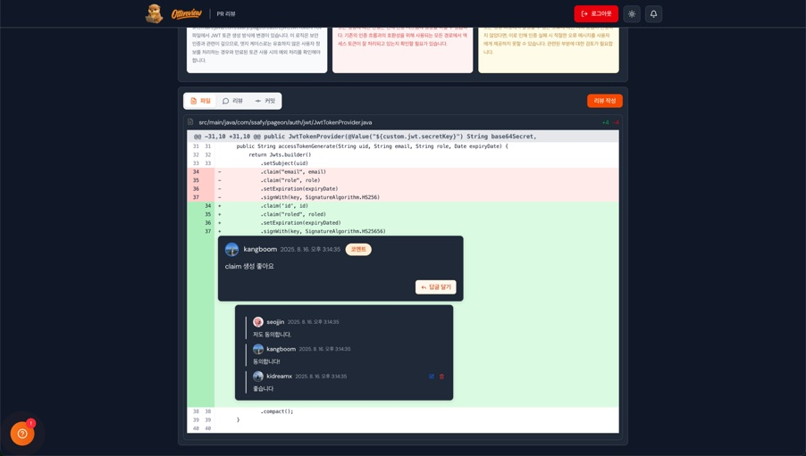
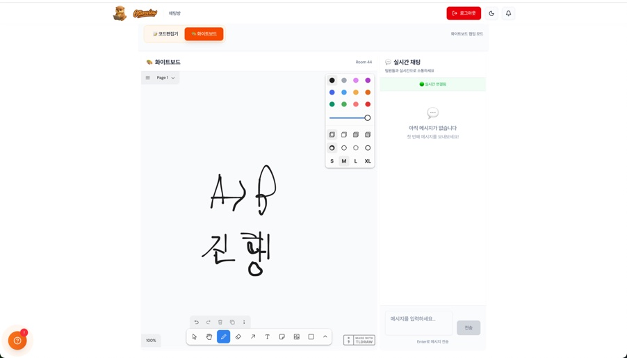
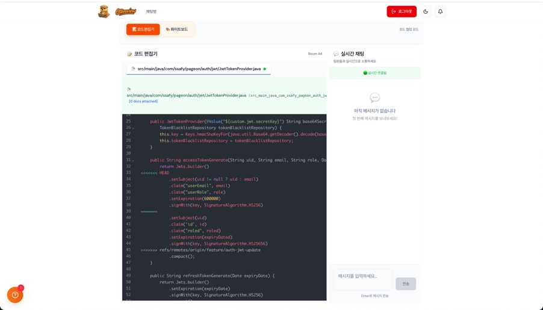
시스템 아키텍처
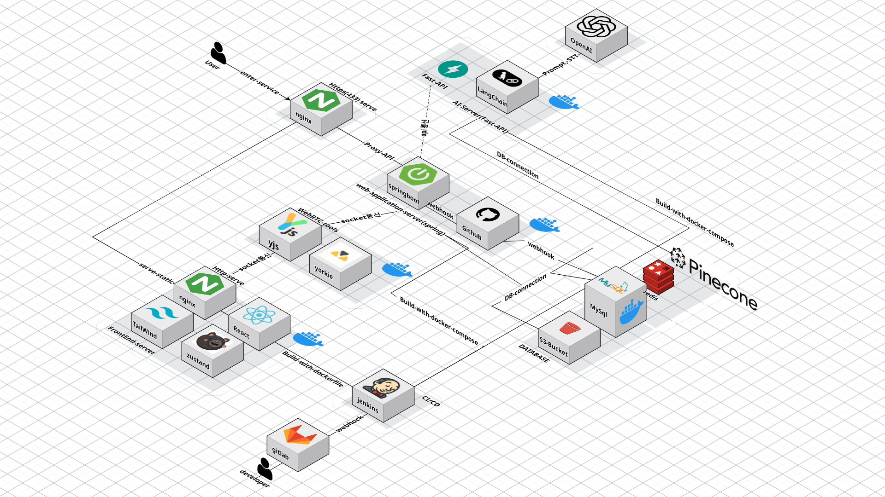
담당 업무
! 실시간 이벤트 기반 데이터 동기화 및 설정 복잡도를 낮춤
! EC2, Jenkins, Nginx, docker-compose를 활용하여 CI/CD 환경 구축
! SpringBoot와 Github Webhook을 활용하여 실시간 연동 및 API 기능 구현
Troubleshooting
? GitHub API를 사용할 시 저장소 1개당 평균 2초의 동기화 시간이 소요되었습니다.
API 호출 부하를 줄이고 데이터 정합성을 확보한 이벤트 기반 아키텍처 구현
? 폭포수 모델로 초반에 진행하며 주간 진행도가 10%에 그치는 문제가 발생했습니다.
폭포수 모델에서 애자일로 전환해 개발 가속화 및 협업 효율 극대화
관광지 추천 및 여행 일정 추천 플랫폼
Vue.jsSpring BootKakao APISpring AI개발환경
Preview
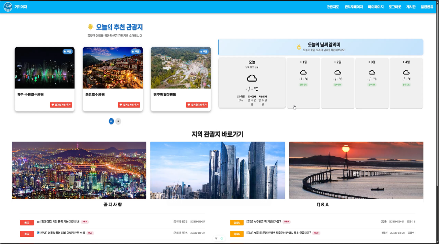
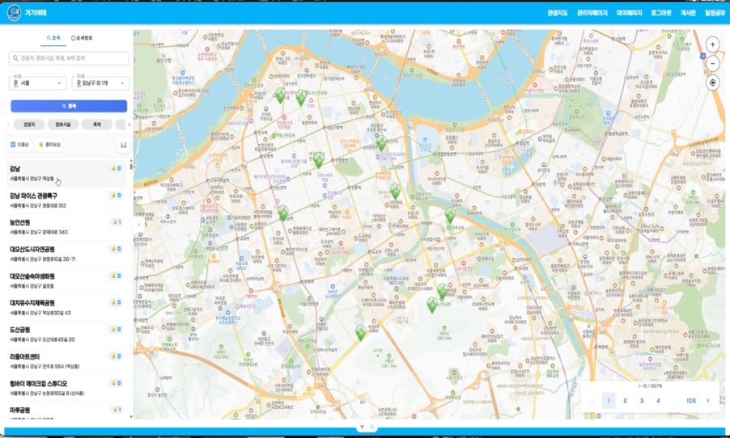
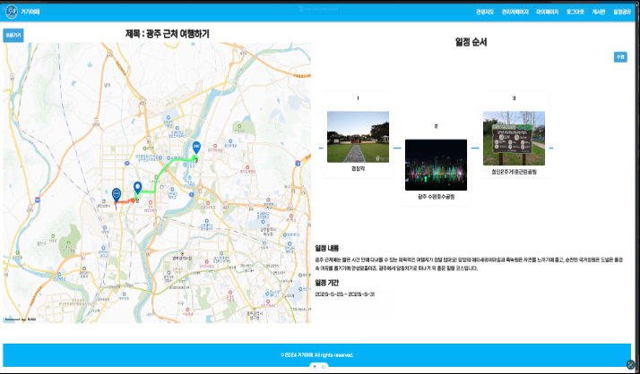
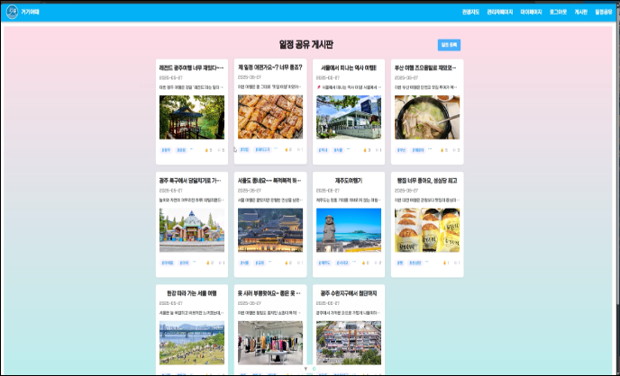
담당 업무
! Kakao API를 사용한 일정 최단거리 기능 구현 및 일정 게시판 CRUD
! Spring AI 및 Redis를 활용하여 사용자 데이터 기반 서비스 개발
Troubleshooting
? 검색어를 입력해 포함된 검색어를 찾는 데 O(n²) 시간이 소요되었습니다.
KMP 알고리즘을 사용하여 O(n²) → O(N+M)으로 향상
전통시장 공동구매 플랫폼
Spring BootToss PaymentsReact오아시스 해커톤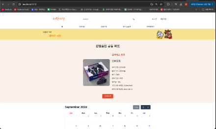
개발환경
Preview
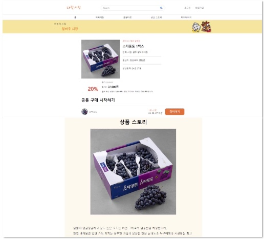
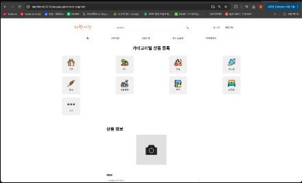
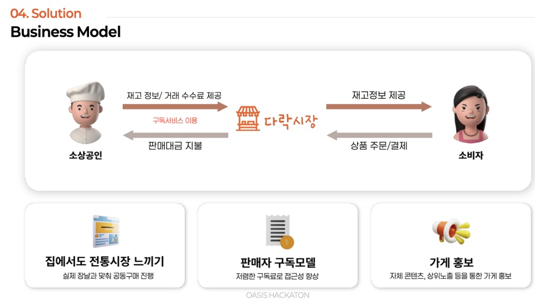
Business Model
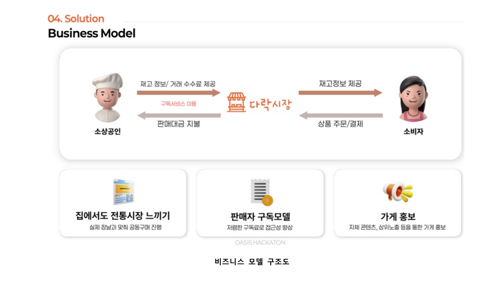
담당 업무
! Toss Payment API 및 재품 API 구조 설계 및 개발
Troubleshooting
? 우리가 느끼는 것보다 직접 상인분들이 느끼는 문제점의 인지가 필요했습니다.
혼자서 직접 양동시장에 찾아가 상인분들과의 인터뷰를 통해 문제점을 파악
조선대학교 교내 종합정보 앱 · 팀원 BE, Infra
상세 자료 준비 중Contact
궁금한 점이나 협업 제안이 있다면 이메일이나 GitHub으로 편하게 연락 주세요.